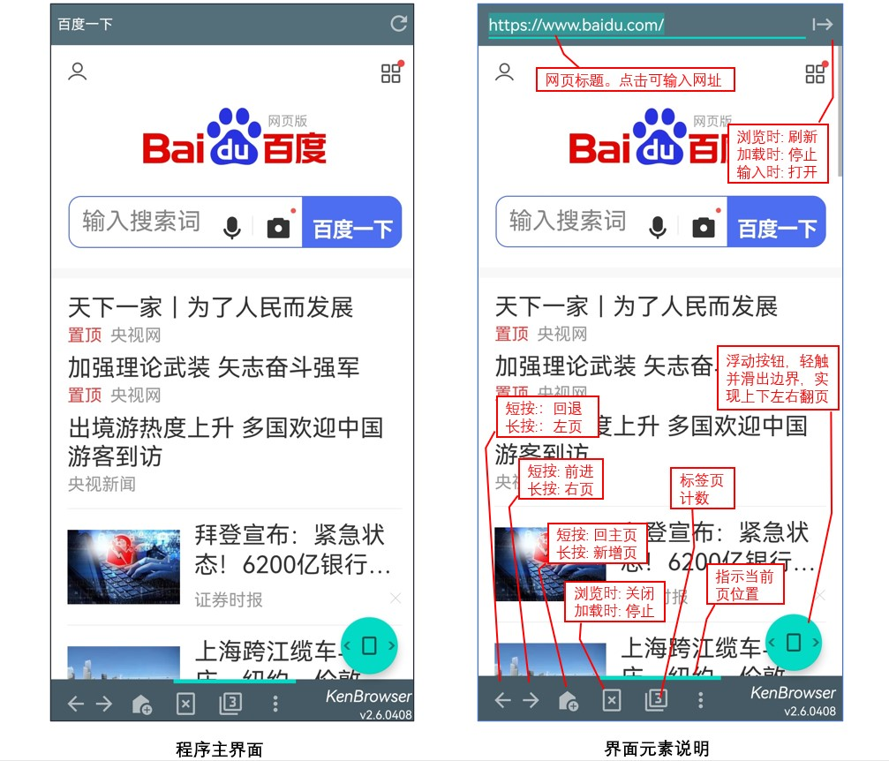
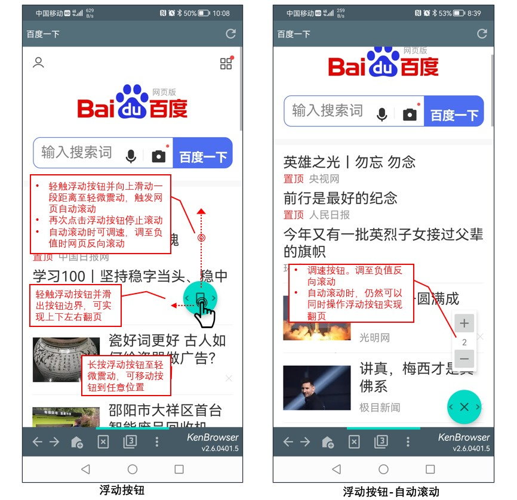

KenBrowser发布主页
0.最新版本下载：
点击下载：KenBrowser_v3.1.0815.apk
1.应用描述：
如果你和我一样厌倦了手机上的浏览器越来越臃肿，使用不够方便，请试试KenBrowser(KB浏览器)吧！
它是一款用在Android安卓设备上的移动端浏览器。
功能特点：
- 界面简洁，程序小巧只有4M。
- 独有的浮动按钮操控滚动翻页，网页自动滚动可调速。
- 专注操作便利性，一个手指头，最少的操作，即可完成日常网页浏览！
- 可隐藏的书签收藏夹。
- 支持自定义的javascript注入，支持油猴脚本，扩展无限可能。
2.主界面说明：
软件就一个主界面，界面元素如图示。有些按钮的短按和长按有不同的功能。

3.浮动按钮：
浮动按钮是KenBrowser的独有功能，用于控制网页的各种翻页和滚动。
单击：单击浮动按钮，网页向上滑动半屏高度。
双击：触发自动滚动。弹出的调速按钮可调节滚动速度，速度负值则反向滚动。再次点击停止自动滚动。
轻划：轻触按钮并向上下左右方向划出按钮边界，将触发网页的上下左右方向翻页。
长按：长按浮动按钮直到轻微震动后，可以拖动按钮到任意位置。你手指在哪按钮就在那！

4.可隐藏的收藏夹
在浏览器的主页，双击“Bookmarks”标题，将显示被隐藏的书签。程序自带有一个隐藏的书签。
进入收藏夹配置界面（系统菜单-“收藏夹”），在配置界面同样双击“收藏夹”标题，也会在列表显示隐藏的书签。显示隐藏书签时，点击右边菜单按钮，选择“隐藏/显示”，则可改变书签项的显示属性。
5.自定义javascript注入
KenBrowser是少有的支持注入自定义javascript脚本和油猴脚本的手机浏览器。
在JS列表界面（系统菜单，“设置”-“注入JS管理”-“JS列表”），可查看当前已安装的脚本(缺省已安装“知乎手机浏览器增强脚本[链接]”)。
点击项目菜单可以删除、修改和分享javascript脚本。
js脚本导入有2种方式：
1）在手机的文件管理器选择要导入的js脚本文件，分享/发送到KenBrowser，则自动导入；
2）系统菜单-“设置”-“注入JS管理”-“导入JS”，在文件选择框选择要导入的js脚本文件，确认。
注意：导入的js脚本文件名称和文件内注释，需合乎油猴脚本的格式规范。
在网站greaseFork [链接] 有海量的脚本资源，可以为KenBrowser带来无限的功能扩展。可以查看作者编写的脚本[链接]，也欢迎大家上传脚本增强KB的功能:)
6.网页文本选择
因为技术性的原因，现时在网页选择文本的操作有一点点复杂，详细如下。日后将会改进。
7.分享到KenBrowser
你可以在其它app分享内容到KenBrowser。现在KB支持以下格式的分享：
纯文本：在其它app选择文字或单词，分享到KB，将直接打开该关键字的搜索结果。
html文件：可以把一个html文件分享/发送给KenBrowser，将会打开该网页。
Javascript文件：参考【链接】。
剪贴板网址：在任意app复制url到剪贴板，然后进入KenBrowser，点击顶部标题栏的网址输入框，将提示问是否打开网址。
8.从KenBrowser分享
在网页任意位置长按，在弹出菜单选择“保存/分享”，可以把当前网页的文本，或html源码分享给其它程序。
在其它浏览器打开本页：KenBrowser专注于网页浏览，所以某些功能可能别的浏览器会更强大。你可以通过长按弹出菜单-“保存/分享”-“其它浏览器打开”，
随时在别的浏览器打开当前网页，以便利用其它浏览器的强大功能。
9.收藏夹书签的导出导入
KenBrowser支持收藏夹书签的导入和导出。
导出：在主页长按弹出菜单，选择“保存/分享”-“分享本页html..”，就可把收藏夹分享给其它文本编辑app或手机文件管理器。然后在导出的文件上做插入、删除和修改。
导入：把修改后的文件保存，然后分享/发送给KenBrowser，则KB会把文件里的书签融合到你现有的书签列表里。在主页刷新则可看到融合后的结果。
注意：修改书签html文件时，只能修改书签部分，html的其它部分不要随意改动，否则KenBrowser不能正确识别。
10.版本历史
v3.1：2023/8/15， 程序大幅重构优化，完善浮动按钮功能，完成自定义js注入功能、隐藏书签功能；github发布主页改版，软件市场上架。
v2.7：2023/5/2， 支持内置js注入，已具备日常浏览功能，已经是自己日常使用时间最多的app；在github建立app发布主页，程序发布；版权中心申请软件著作版权。
v2.0：2022/12/21， 再次重拾KenBrowser，几乎从零开始再做一次。
v1.2：2021/9/13， 学习android编程，开些编写KenBrowser作为练手的app。v1.2版本具备基本网页浏览功能。